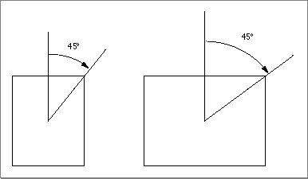

Legacy Document
Important: The information in this document is obsolete and should not be used for new development.
Important: The information in this document is obsolete and should not be used for new development.


PtToAngle
To calculate an angle between a vertical line pointing straight up from the center of a rectangle and a line from the center to a given point, use thePtToAngleprocedure.
PROCEDURE PtToAngle (r:\xDDRect; pt: Point; VAR angle: Integer);
r- The rectangle to examine.
pt- The point to which an angle is to be calculated.
angle- The resulting angle.
DESCRIPTION
ThePtToAngleprocedure returns in theangleparameter the angle between a vertical line (pointing straight up from the center of the rectangle that you specify in therparameter) and a line from the center of that rectangle to a point (which you specify in theptparameter).The result returned in the
angleparameter is specified in degrees from 0 to 359, measured clockwise from 12 o'clock, with 90 at 3 o'clock, 180 at 6 o'clock, and 270 at 9 o'clock. Other angles are measured relative to the rectangle. If the line to the given point goes through the upper-right corner of the rectangle, the angle returned is 45, even if the rectangle isn't square; if it goes through the lower-right corner, the angle is 135, and so on, as shown in Figure 3-18.Figure 3-18 Forty-five-degree angles as returned by the
PtToAngleprocedure
The angle returned might be used as input to one of the procedures that manipulate arcs and wedges, as described in "Drawing Arcs and Wedges" beginning on page 3-67.